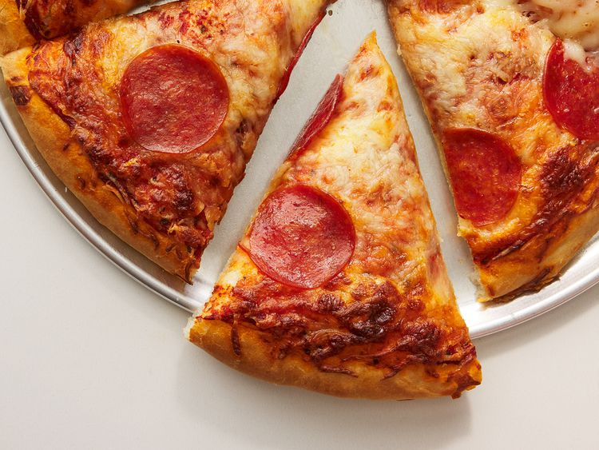

Pizza

This is the best homemade pepperoni pizza in the world
This pizza recipe will take some work, but in the end it will be satisfying and filling, so it is worth it!
Ingredients
Quick Pizza Sauce
- 1/2 cup water
- 1/2 can Tomato Paste
- 1 teaspoon dried oregano, crushed
- 1 teaspoon dried basil, crushed
- 1/2 teaspoon garlic powder
- 1/2 teaspoon onion powder
- 1/2 teaspoon sugar
- 1/2 teaspoon salt
- 1/4 teaspoon black pepper
Easy Pizza Crust
- 3 1/4 cups all-purpose flour, more as needed
- 2 envelopes pizza crust yeast
- 1 tablespoon sugar
- 1 1/2 teaspoon salt
- 1 1/3 cups very warm water
- 1/3 cup oil
Topping
- 1 cup shredded mozarella chesse, or more to taste
- 1 package of Pepperoni
Steps
- Preheat the oven to 425 degrees F (220 degrees C). Grease two 12-inch pizza pans.
- Make sauce: Whisk together water, tomato paste, oregano, basil, garlic powder, onion powder, sugar, salt, and pepper in a medium bowl until smooth. Set aside.
- Make crust: Combine 2 cups flour, yeast, sugar, and salt in a large bowl. Add warm water and oil; mix until well blended, about 1 minute. Gradually add remaining flour, a little at a time, until a soft, sticky dough forms.
- Transfer dough to a floured surface; knead until dough is smooth and elastic, about 4 minutes. Add more flour as needed. (If using RapidRise yeast, let dough rest, covered, for 10 minutes.)
- Divide dough in half. Lightly flour your hands, then pat each piece of dough onto the prepared pizza pans.
- Top dough with sauce, cheese, and pepperoni.
- Bake in the preheated oven until crusts are browned and cheese is bubbly, 18 to 20 minutes. Rotate pizza pans between the top and bottom oven racks halfway through baking.